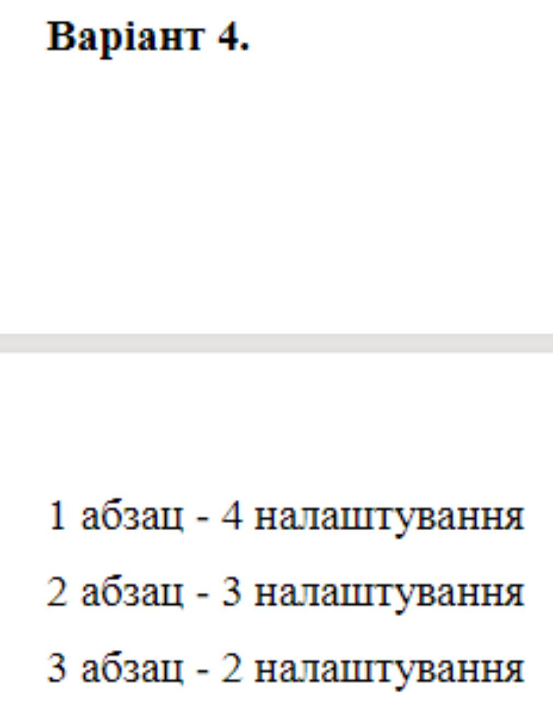
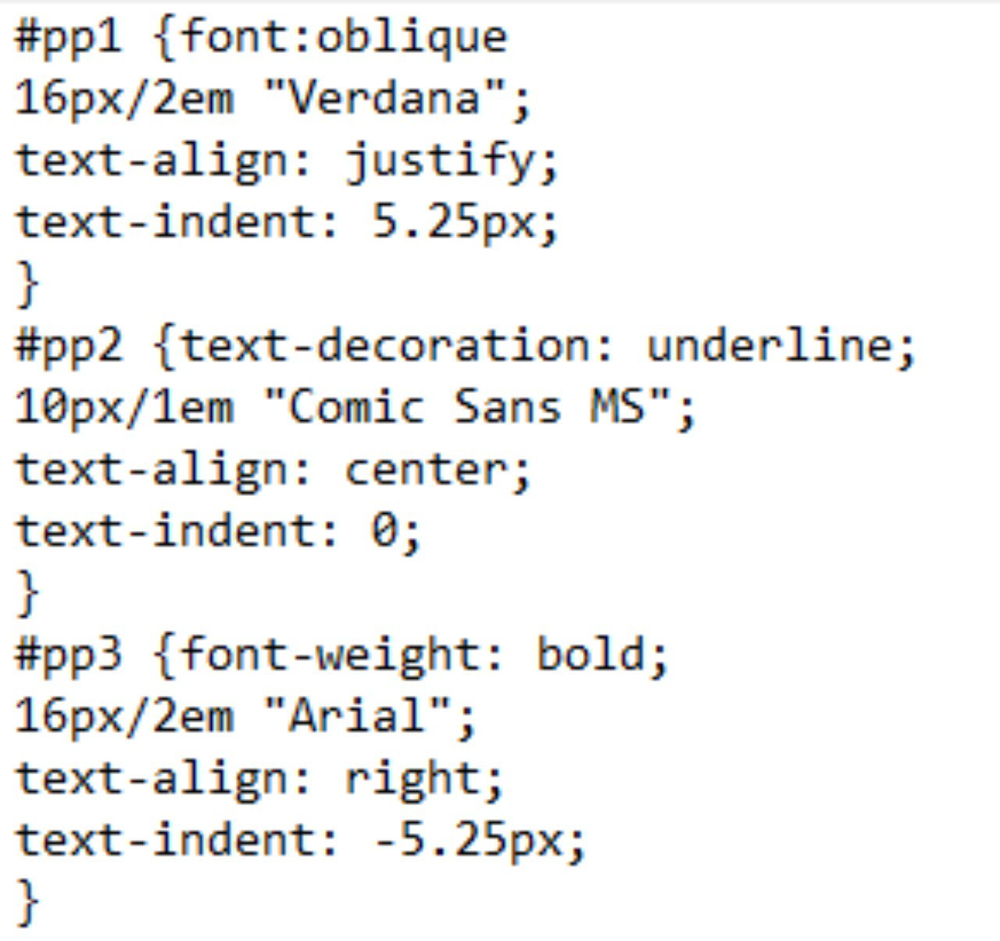

Блок контент id="content" ВІД ЗИМИ І ДО ЗИМИСічень січе, Лютий лютує, Березень плаче, Квітень квітує. Травень під ноги Стелить травицю.
Червень складає Сіно в копиці.Липень медовий Бджілок чарує. Серпень чудовий Булки дарує.
Вересень трусить Груші в садочку. Жовтень гаптує Клену сорочку. Йде листопад,Застеля килими. Грудень надходить —Початок зими. Ф. Петров
Пояснення до індивідуального завдання
